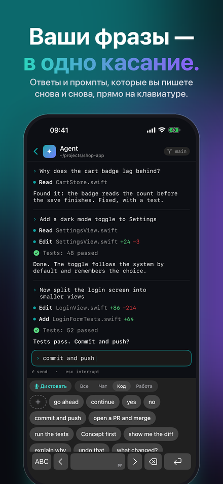
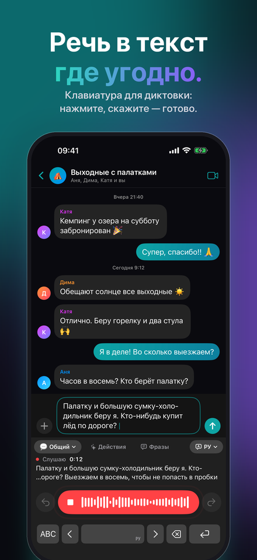
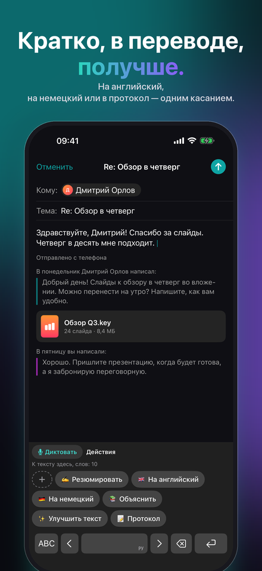
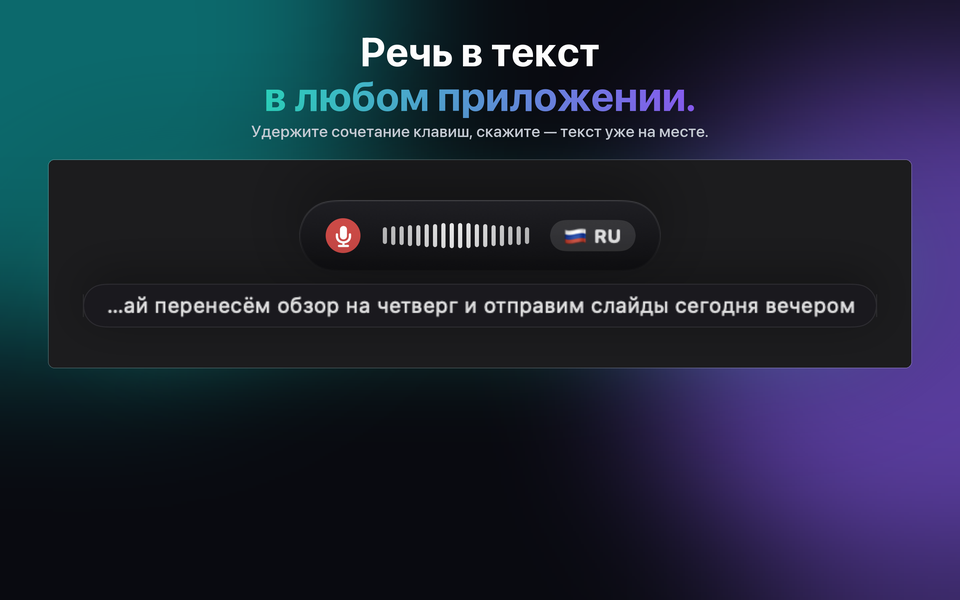
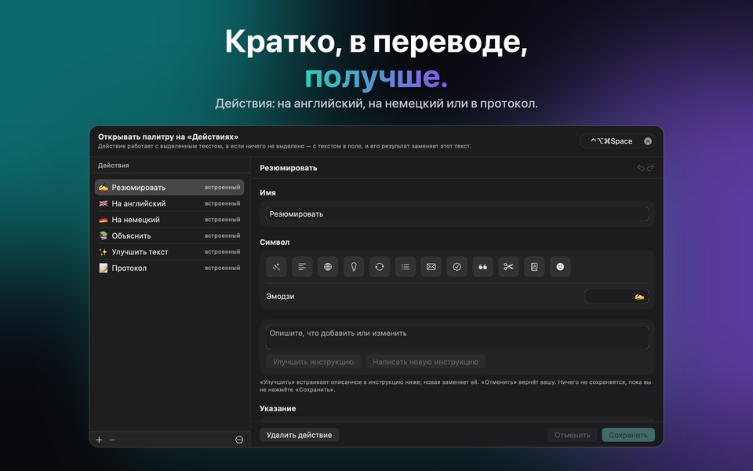
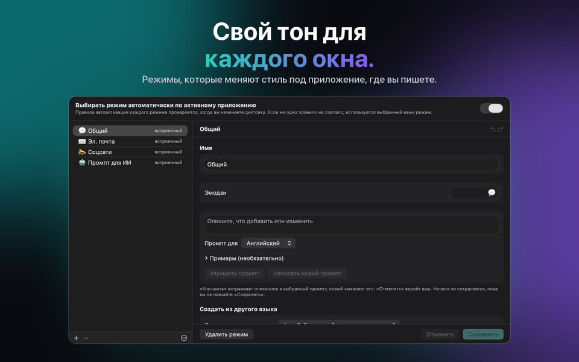

Для Mac, Windows, iPhone и iPad
Многоязычный ввод голосом с ИИ
Вы говорите. Он пишет. JustTalk переводит речь в текст на вашем Mac: многоязычный голосовой ввод в любом приложении, с правкой от ИИ.



Получить JustTalk
Одно и то же приложение на каждой платформе — те же режимы, те же языки и тот же выбор между локальным и облачным. Каждое покупается один раз в своём магазине: App Store для Mac, iPhone и iPad, Microsoft Store для Windows. На Mac, iPhone и iPad iCloud держит режимы, фразы, действия и настройки одинаковыми; Windows участвует через файл конфигурации.
macOS
macOS 14 или новее, Apple silicon или Intel. Диктуй в любое приложение по горячей клавише.
Windows
Windows 10 (1809) или новее, x64, x86 или ARM64. Установщик — подписанный MSIX.
iPhone & iPad
iOS и iPadOS 26 или новее. Клавиатура, с которой диктуешь в любом приложении, и меню «Поделиться» для уже готовых записей.
Что он делает
Обычно программы для диктовки просто отдают вам расшифровку, а причёсывать её приходится самому. JustTalk доводит дело до конца: нажмите горячую клавишу, скажите фразу — и готовое, причёсанное предложение вставится прямо в то приложение, которое уже открыто перед вами. Не нужно переключаться в другое окно и ничего никуда копировать.
Написано, а не расшифровано
Языковая модель убирает «эканья» и расставляет знаки препинания. В поле оказывается текст, который вы бы сами набрали.
Локально или в облаке — решаешь ты
Whisper и локальная модель работают целиком на твоём собственном компьютере, бесплатно и офлайн. Или подключи Google, OpenAI, Groq, Mistral или Anthropic своим ключом и плати им напрямую.
100 языков
Определяются прямо во время речи, даже посреди фразы. Никаких настроек переключать не нужно.



Сколько это стоит
Приложение — это один платёж. Модели бесплатны, если вы запускаете их локально, и оплачиваются по факту использования, если вы работаете через облачного провайдера — счёт выставляет он, а не мы. Десять минут диктовки в день через Groq по тарифам на сентябрь 2026 года обходятся заметно меньше доллара в месяц; сорок пять минут в день при интенсивном использовании — примерно один-три доллара. Первые семь дней всё разблокировано полностью, без ограничений и без привязки карты.
После пробного периода бесплатная версия продолжает работать с дневным лимитом: диктовки — 2 (до 30 символов каждая), фразы — 5, действия — 5, на iPhone и iPad ещё исправления набора — 5. JustTalk Pro одним платежом снимает все ограничения — с облачным сервисом ИИ использование ограничено тогда только вашим доступом к этому сервису. Это не подписка, и отменять ничего не нужно.
Как им пользуются
Почта и чаты
Для повседневного текста есть General; у остальных режимов свой тон и словарь, и нужный можно подбирать автоматически — по приложению, в которое вы диктуете.
Встречи
Запишите обе стороны звонка и получите расшифровку всего разговора, а не только своей половины.
Фразы и действия
То, что вы пишете снова и снова, — в одно касание: на клавиатуре iPhone и в палитре на компьютере. Действие переписывает выделенное или всё поле по инструкции, которую пишете вы — или модель за вас.
Набор на iPhone
У клавиатуры JustTalk есть и все буквы, а «Исправлять набор» приводит в порядок напечатанное, когда вы делаете паузу: опечатки, заглавные, пунктуацию — но не ваши формулировки.
Записи
Голосовая заметка, лекция, интервью: откройте или отправьте их в JustTalk и получите расшифровку — на любой платформе.
Локально или в облаке — решаете вы, а мы говорим, чего это стоит
JustTalk — это оболочка вокруг моделей, а не сами модели. Запускайте их локально — Whisper вместе с локальной языковой моделью через llama.cpp, Ollama или LM Studio — и ничего не загружается, ничего не оплачивается, никакой учётной записи не существует. Этот путь полноценен, но требует Mac или ПК с запасом памяти; на iPhone и iPad диктовку берёт на себя распознавание прямо на устройстве. Либо подключите облачного провайдера со своим ключом: быстрее и точнее, а счёт за использование он выставляет вам напрямую. В любом случае — ни аналитики, ни слежки, ни учётной записи у нас. Политика приватности говорит точно, что отправляет каждый из вариантов. В приложении раздел «Ваши данные и ИИ» в любой момент показывает, куда уходят ваш голос и текст, а заявление об ИИ объясняет, какой ИИ что делает.
Диктуйте на 100 языках, включая английский, немецкий, французский, испанский, итальянский, португальский, японский, корейский, греческий, украинский и русский.
JustTalk
Бесплатно попробовать, открывается одной покупкой. Mac, Windows, iPhone и iPad, 100 языков, и ничего не выгружается, пока сам не попросишь.